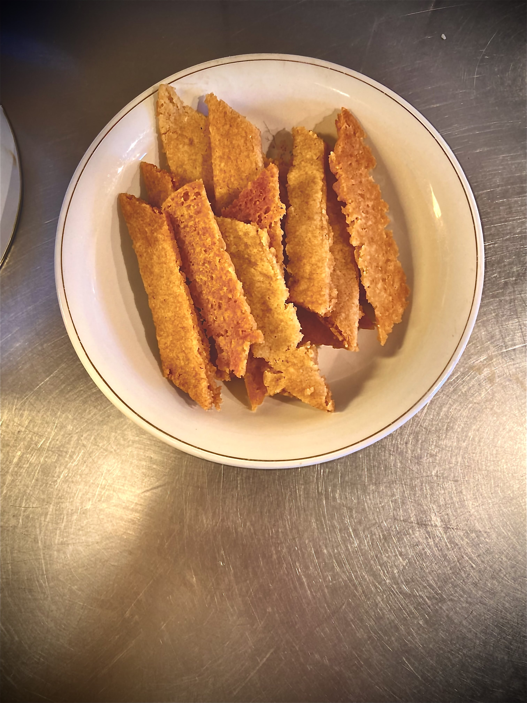

Kolakakor
Du behöver:
100g smör
1 dl socker
1 msk vaniljsocker
1 msk sirap
2½ dl vetemjöl
1 tsk bakpulver
Gör såhär:
Låt smöret bli mjukt i mikron. Blanda med socker, vaniljsocker, sirap, vetemjöl och bakpulver, gärna i en matberedare eller med en elvisp. Arbeta degen tills den går ihop och tryck ihop det sista med händerna.
Halvera degen. Forma till 2 rullar (för 30 st). Lägg dem på bakpappersklädd plåtnoch platta ut dem till ca 0,5 cm.
Grädda mitt i ugnen i 175°C i 10-12 minuter. Ta ut plåten och skär kakorna diagonalt.